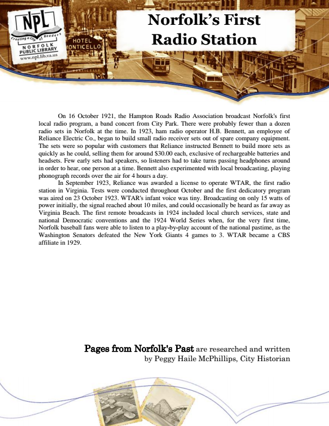

Norfolk’s First Radio Station
On 16 October 1921, the Hampton Roads Radio Association broadcast Norfolk's first local radio program, a band concert from City Park. There were probably fewer than a dozen radio sets in Norfolk at the time. In 1923, ham radio operator H.B. Bennett, an employee of Reliance Electric Co., began to build small radio receiver sets out of spare company equipment. The sets were so popular with customers that Reliance instructed Bennett to build more sets as quickly as he could, selling them for around $30.00 each, exclusive of rechargeable batteries and headsets. Few early sets had speakers, so listeners had to take turns passing headphones around in order to hear, one person at a time. Bennett also experimented with local broadcasting, playing phonograph records over the air for 4 hours a day.
In September 1923, Reliance was awarded a license to operate WTAR, the first radio station in Virginia. Tests were conducted throughout October and the first dedicatory program was aired on 23 October 1923. WTAR's infant voice was tiny. Broadcasting on only 15 watts of power initially, the signal reached about 10 miles, and could occasionally be heard as far away as Virginia Beach. The first remote broadcasts in 1924 included local church services, state and national Democratic conventions and the 1924 World Series when, for the very first time, Norfolk baseball fans were able to listen to a play-by-play account of the national pastime, as the Washington Senators defeated the New York Giants 4 games to 3. WTAR became a CBS affiliate in 1929.
Pages from Norfolk's Past are researched and written by Peggy Haile McPhillips, City Historian